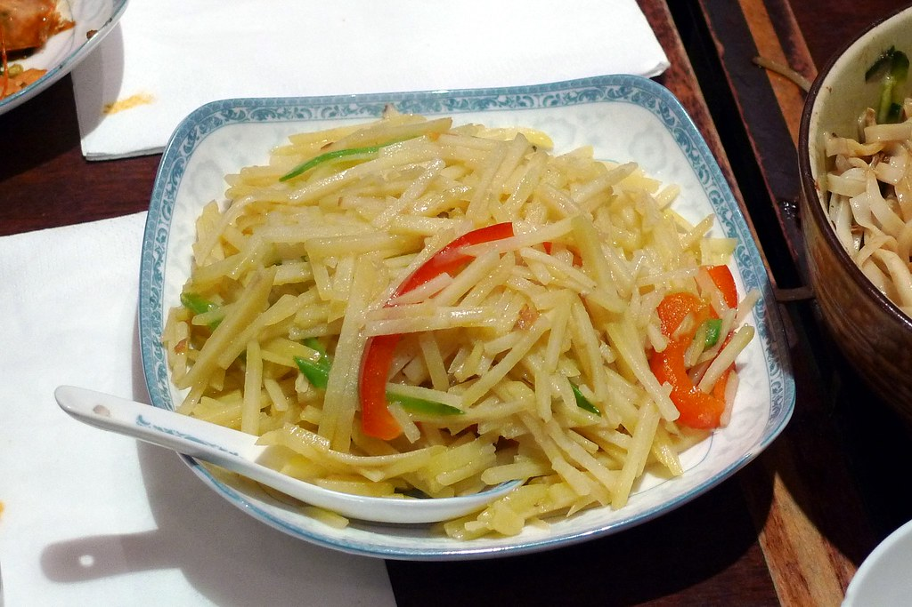

Home
Stir-Fried Potatoes

Description
Being raised in a chinese household, potatoes are used in quite a different way compared to western dishes.
Stir-fried potato is an incredibly simple dish, easy to prepare, that turns a potato into a blend of matchstick shaped sticks
that are both savoury and a little sweet. Black rice vinegar and soy sauce blend well together
to form a nice umami flavour.
Ingredients
- 1-2 potatoes
- 1 tablespoon of cooking oil
- sprinkle of chili flakes
- 1/2 teaspoon sichuan peppercorns
- 3 gloves sliced garlic
- 1 teaspoon of black rice vinegar
- 1 teaspoon of soy sauce
- pinch of salt
- 1/4 teaspoon of brown sugar
Steps
- Wash and peel the potato, cut it into julienne strips.
- Rinse the potato strips and drain thoroughly.
- Heat up wok on medium heat. Add in cooking oil, then add dried chili and Sichuan peppercorns. Sizzle till fragrant.
- Remove Sichuan peppers then add in garlic. Sauté for a minute.
- Add potato strips and set the heat to high. Stir-fry for a minute.
- Put black rice vinegar,salt, sugar and soy sauce into the wok. Sauté for another minute then dish out
- Serve with rice